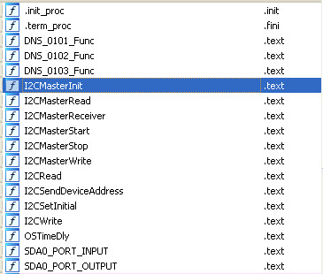
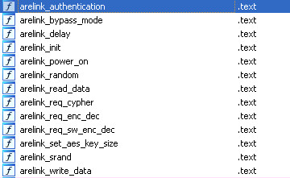
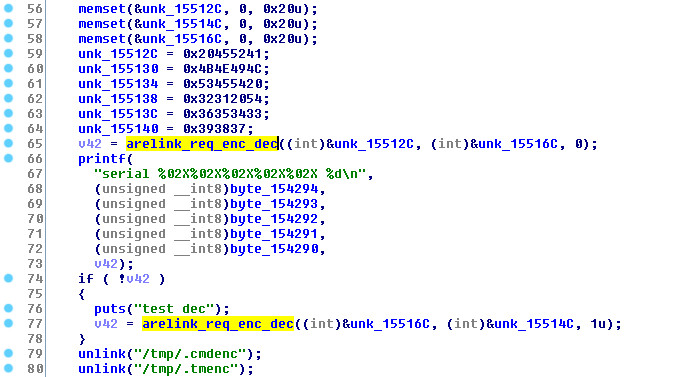
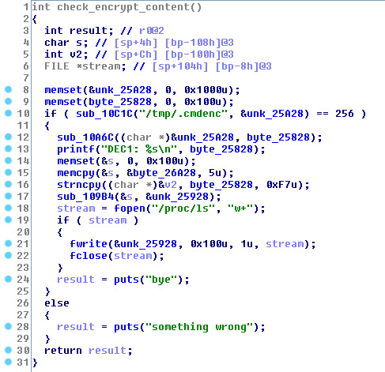
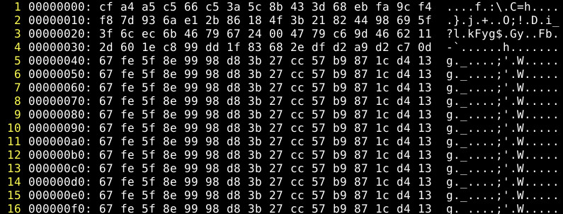
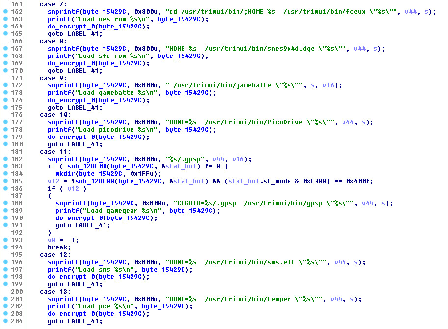
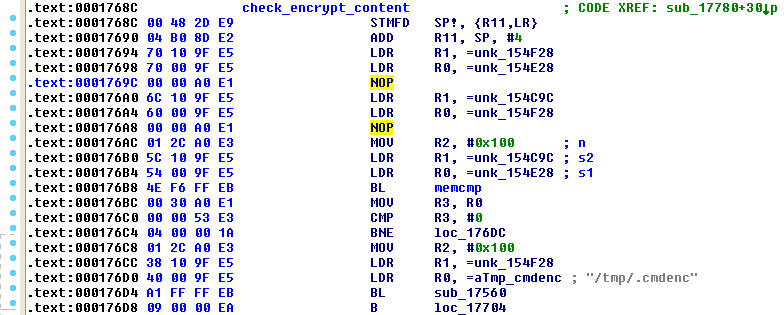
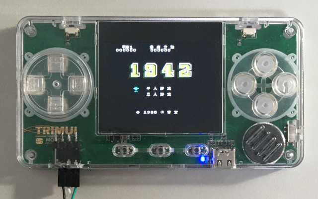

Steward
分享是一種喜悅、更是一種幸福
掌機 - TRIMUI - 破解加密IC
XBOOT大佬說有一顆加密IC而且是透過I2C介面傳輸，於是搜尋一下I2C字眼
$ grep -i i2c usr/trimui/ -r
Binary file usr/trimui/bin/MainUI matches
Binary file usr/trimui/apps/cdogs/music/game/space_dimensions_8bit.ogg matches
Binary file usr/trimui/lib/libarelink.so matches
P.S. Arelink安瑞易连
開啟libarelink.so，果真有I2C副程式

發現寶庫

開啟MainUI去找尋trimui_arelink_req_enc_dec就可以看到關鍵字/tmp/.cmdenc

再度搜尋一下
$ grep cmdenc . -r
Binary file ./usr/trimui/bin/MainUI matches
Binary file ./root/gameloader matches
./etc/init.d/main: if [ -f /tmp/.cmdenc ] ; then
./main: if [ -f /tmp/.cmdenc ] ; then
P.S. /etc/init.d/main
/etc/init.d/main
if [ -f /tmp/.cmdenc ] ; then
/root/gameloader
elif [ -f /tmp/cmd_to_run.sh ] ; then
chmod a+x /tmp/cmd_to_run.sh
/tmp/cmd_to_run.sh
rm /tmp/cmd_to_run.sh
fi
P.S. 透過gameloader做後續的動作
開啟gameloader就可以看到/tmp/.cmdenc相關資訊，長度是256

於是，司徒修改測試
if [ -f /tmp/.cmdenc ] ; then
dd if=/dev/urandom of=/tmp/.cmdenc bs=1 count=256
/root/gameloader
司徒使用FC 1942遊戲測試
trimui_sunxi_gpio_init: ver Aug 1 2020 serial: 00000002ED file /tmp/.cmdenc len=256 DEC1: [ 17.423914] write len=256 [ 17.820278] exec! there result of call_usermodehelper is 0 [ 17.826401] exec! the process is "gameloader", pid is 183. [ 17.832694] BASE64:0wiSJBoxSQ/reYr9IPNlu0XPhZ3kv6xh0WwuWz36EDlzvzxTFL+JUQCWXtSWVLJQ1rwI+4Ul3yGYusGOe9GNvWf+X46ZmNg7J8xXuYcc1BNn/l+OmZjYOyfMV7mHHNQTZ/5fjpmY2DsnzFe5hxzUE2f+X46ZmNg7J8xXuYc= bye
拿掉測試那行，重新載入FC 1942遊戲，則顯示如下
trimui_sunxi_gpio_init: ver Aug 1 2020 serial: 00000002ED file /tmp/.cmdenc len=256 DEC1: cd /usr/trimui/bin/;HOME=/mnt/SDCARD/Roms/FC/ /usr/trimui/bin/fceux "/mnt/SDCARD/Roms/FC//1942[MS漢化](JU)[STG](0.31Mb).nes" [ 25.267101] write len=256
/tmp/.cmdenc

加密IC是負責字串的加解密，於是，司徒找了一下MainUI

接著把呼叫加解密Patch成NOP

測試一下
Load nes rom cd /usr/trimui/bin/;HOME=/mnt/SDCARD/Roms/FC/ /usr/trimui/bin/fceux "/mnt/SDCARD/Roms/FC//1942[MS漢化](JU)[STG](0.31Mb).nes" sth wrong, encoded != decoded !!!!
接著看一下MainUI寫出的檔案
# ls -al
drwxrwxrwt 3 root root 120 Jan 1 00:00 .
drwxr-xr-x 19 root root 4096 Jan 1 00:00 ..
-rw-r--r-- 1 root root 256 Jan 1 00:00 decode
-rw-r--r-- 1 root root 256 Jan 1 00:00 encode
-rw-r--r-- 1 root root 424 Jan 1 00:00 game_output.txt
drwxr-xr-x 2 root root 60 Jan 1 00:00 log
# cat /tmp/decode
/mnt/SDCARD/Roms/FC//1942[MS漢化](JU)[STG](0.31Mb).nes
接著修改一下
if [ -f /tmp/.cmdenc ] ; then
echo "#!/bin/sh" > /tmp/run.sh
echo "cd /usr/trimui/bin/;HOME=/mnt/SDCARD/Roms/FC/ /usr/trimui/bin/fceux \"" >> /tmp/run.sh
cat /tmp/decode >> /tmp/run.sh
echo "\"" >> /tmp/run.sh
chmod +x /tmp/run.sh
/tmp/run.sh
#/root/gameloader
elif [ -f /tmp/cmd_to_run.sh ] ; then
chmod a+x /tmp/cmd_to_run.sh
/tmp/cmd_to_run.sh
rm /tmp/cmd_to_run.sh
fi
接著，再度載入FC 1942遊戲，成功繞過加密IC
